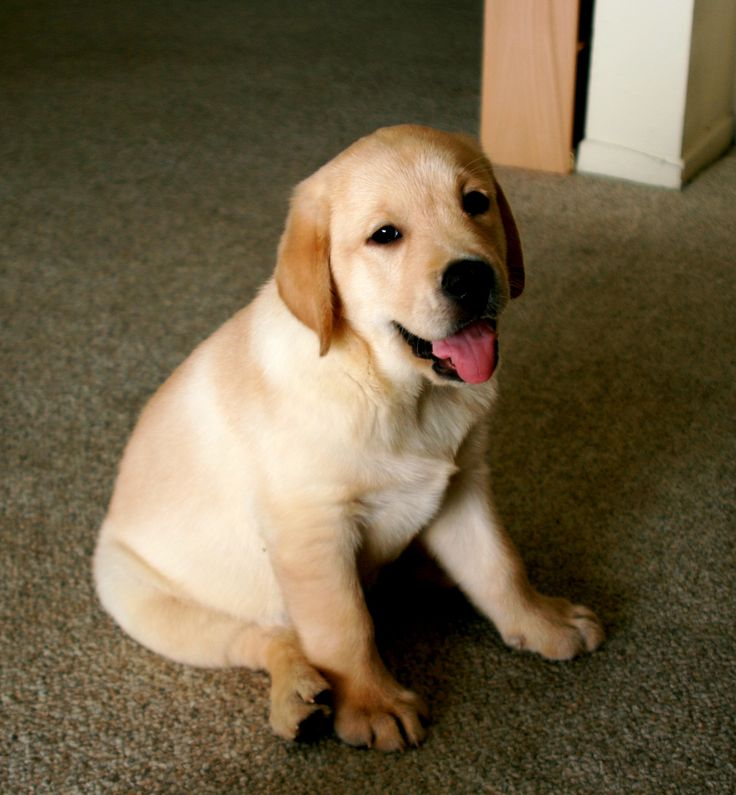
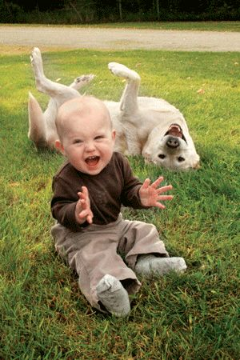
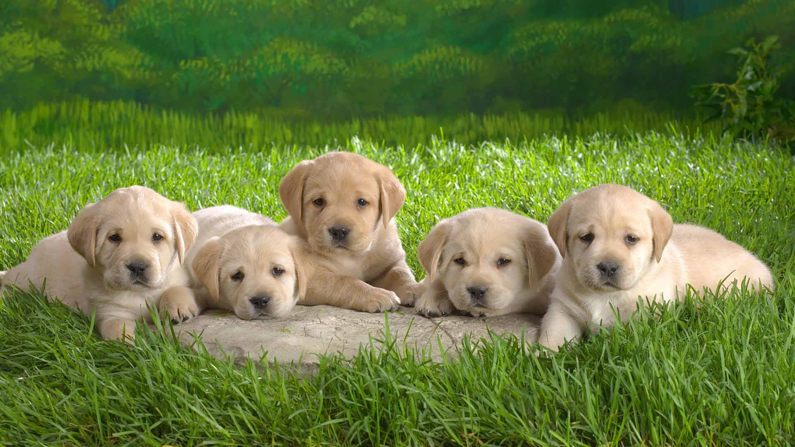
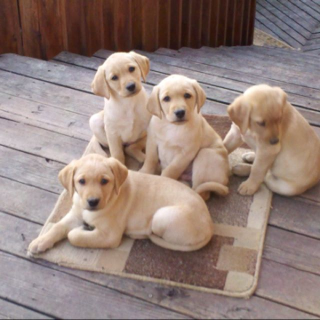

My name is Campbell Jones, and I absolutely love yellow Labrador retrievers. Personally, I believe they are the best animals to ever walk this planet, due to their kind, loving, and loyal personalities. Yellow labs have been the most popular dog in the United States for the past 24 years, and I believe there is a reason for that. I feel that they are the most popular because they are truly the best dogs on the planet. Whether you like them for their hunting abilities, or their perfect pet attitude, one thing I know for certain is that owner's of yellow labs will never do anything but love them.
I am 19 years old, and I can honestly tell you that there has never been a point in my life where I didn’t own a yellow lab. My parents owned a lab before I was even born, and she was like their first child. Biscuit, as she was called, was there when I was born, and I was there when she died. Currently, I have two yellow labs at my house, and I can’t help but miss them everyday, as I am sure others who own labs miss theirs as well. I often find myself texting my mother asking for pictures of my dogs, and I'm sure I'm not the only one. Everytime I see a picture of a yellow lab, I find that my mood changes immediately. Its truly amazing how even a picture of this breed of dog can cheer people up immensely.
I don't know what I would do without a yellow lab in my life. They are hands down my favorite animal on the planet. Therefore, when I was assigned this project, I decided to choose a topic that would cheer up those who are currently missing their yellow labs. In addition, after some research, I found out that there are a lot of things most people didn't know about yellow labs. So, I would now like to present 5 fun facts about dogs, and cute pictures to go with them.
| Fun Facts | Explanation | Cute Pictures |
|---|---|---|
| Fact #1:Labradors are not from Labrador. | Contrary to what many may think, the Labrador breed originates from Newfoundland, and not Labrador, Canada. The frist known record of Yellow Labradors dates back to the 1700's when the Earl of Malmesbury returned to England from a trip to Canada with his new pups, calling them Labrador dogs. Due to the geographic closeness of Newfoundland and Labrador, many historians believe the Earl was simply mistaken, but the rest is history! |  |
| Fact#2:Labradors have a high pain threshold. | Ever wonder why you see so many lab puppies on the UGA campus training to become service dogs? This is because Labradors have an extremely high tolerance for pain, making them an ideal breed for service and rescue work. However, the downside is that it is much harder to tell if your lab is in pain than other breeds. |  |
| Fact #3:Labs can tell if you have cancer. | Labrador retrievers have extremely powerful noses, and have been trained to sniff out and identify early stages of cancer. The labs can detect cancer by smelling someone's breath or blood. In fact, the only known way to screen for stages of ovarian cancer is letting a lab sniff the patient. The labs sniff out the changes in organic compounds within a patient's body to determine if cancer cells are present or not. | |
| Fact#4:Before their popularity, the Labrador almost went extinct. | For the past 24 years, the Labrador has been the most popular breed in the United States. However, the breed almost went extinct before even arriving in the U.S. In Newfoundland, the government limited families to only one dog per household and a tax had to be paid for owning a dog. Females had higher taxes associated with them, and therefore were often killed. By the 1880's, the breed was almost nonexistent. ' |  |
| Fact#5:Black, Yellow and Chocolate are not the only colors of Labradors. | Though these 3 colors are the only ones recognized by the American Kennel Club, there are other colors of labs. For example, silver labradors are chocolate labs with a dilution gene that causes their coat to be a lihter color. Another color is fox red, which is technically not a different color, but is an extremely dark version of yellow. This color of lab used to be very common, but as breeders decided that pale yellow was more desireable, this color Labrador became a rarity. |  |
Conclusion
I hope these fun facts made your day at least a little brighter. To conclude, I invite you to try and answer these three dog trivia questions below!
Images: Lab #1 Lab #2 Lab #3 Lab #4 Lab #5
{kind=link}